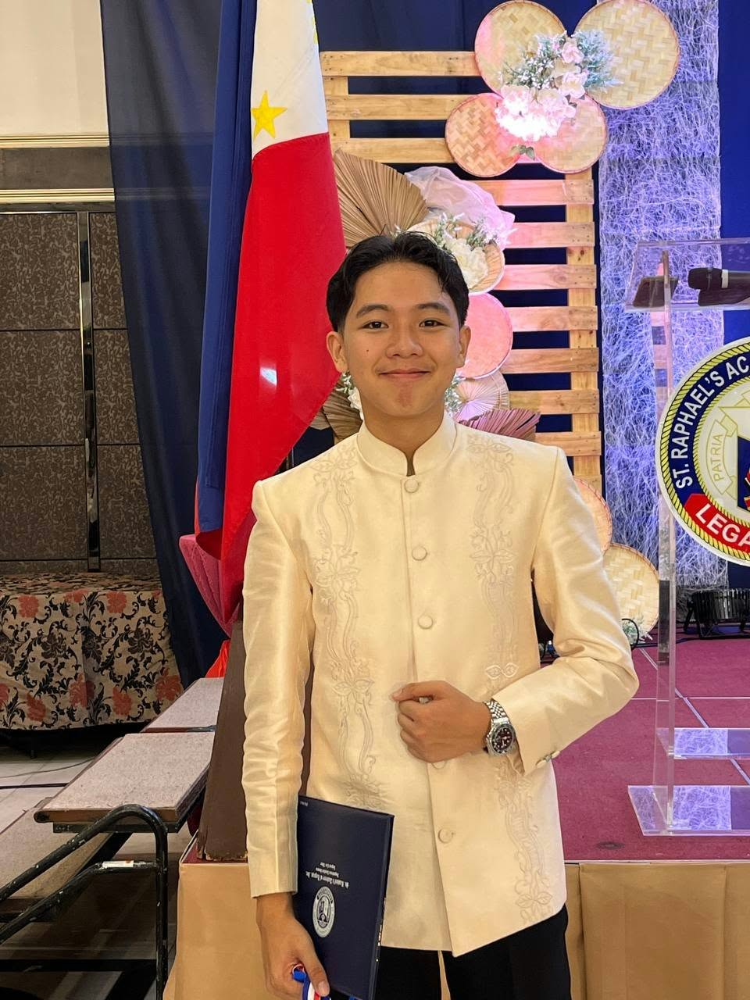

I'm Razzel Atuli, a first-year BS Computer Science student at Bicol University.
I'm an early riser who likes keeping things light, enjoys coffee mornings, and is learning to build things for the web.
1st Year BSCS Student
I'm Razzel Atuli, a first-year BS Computer Science student at Bicol University.
I'm an early riser who likes keeping things light, enjoys coffee mornings, and is learning to build things for the web.

Hello! My name is Razzel Atuli. I am a first-year BSCS student at Bicol University, and I am from Mariawa, Legazpi City. I hope to learn more about programming and web development in the future.
I'm not just a stay-at-home person. I like going out and drinking with my friends, and I like having fun. People say I give off a light, approachable vibe, and I'm usually the one laughing in the friend group.
I'm an early riser. I usually wake up around 6, sometimes 5:30, and have breakfast and coffee with my father and brother before they leave for work and class. If I have a quiz or presentation, I use the morning to review. If not, I read manhwa, scroll through social media, or play a game. Between classes, I kill time in the library with my friends. At home I relax, and I save my assignments and activities for the night before I sleep around 10 or 11.
My interest in computing started on social media. I kept seeing programming videos, and honestly the money in the field caught my attention too, but the videos are what made me curious.
Civil engineering was actually my first choice, so BSCS wasn't the plan. Still, I was super happy just to be studying at Bicol University, and BSCS is really fun, just as I thought it would be. Now I'm enjoying it a lot, and even though I didn't get my first choice, I'm really happy I ended up in Computer Science.
Here are some of the things I enjoy and the skills I'm working on.
| Category | Details |
|---|---|
| Favorite apps | Spotify, Mobile Legends, Tiktok, Facebook, Mihon |
| Favorite reads | Action-fantasy manhwa with a bit of romance |
| Skills I'm building | C Language, HTML, CSS, programming fundamentals |
One website I enjoy visiting is listed below because it has all the music I love in one place.
Making this website got me really interested in web development, so my first goal is to learn more about it and keep improving my skills. In the future, I also want to learn how to make an app, one that has a real purpose and helps people. I haven't decided what it will be yet, but I know I want to build something useful.
| Subject | Day | Time |
|---|---|---|
| CS 101: Introduction to Computing | Wednesday | 9:00 AM - 12:00 PM |
| CS 102: Computer Programming | Monday, Wednesday | 4:00 PM - 7:00 PM |
| Phys 1: Physics for Computing | Tuesday, Thursday | 1:00 PM - 2:30 PM |
| Math 101: Mathematical Analysis | Tuesday, Thursday, Friday | 2:30 PM - 4:00 PM, 1:00 PM - 3:00 PM |
| GEC 11: Understanding the Self | Friday | 9:00 AM - 12:00 PM |
| PATHfit 1 | Saturday | 4:00 PM - 6:00 PM |
| NSTP: ROTC | Sunday | 7:00 AM - 12:00 PM |
Making this page was harder than I expected. Improving the CSS took the most time, and deciding what to write about myself was even harder because I wasn't sure what to share. As I kept writing, it got easier, although it was very draining. Writing everything out also taught me something about myself: my hobbies may not be fun for everyone, but that's okay, because I enjoy them in my own way, and I can still have fun with anyone and adjust to any environment, even if it takes me some time. I'm just someone who likes having fun and keeping negativity and stress out of my life.
Compared to my About Me activity, this version feels more "Me." The added sections about my path into computing and my goals bring out more of myself, so people can get to know me better.